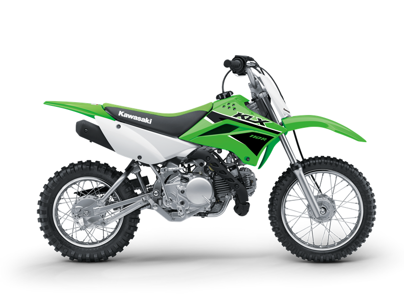

Designed specifically for mini-moto enthusiasts, the new 2023 KLX110 is packed full of kid friendly features, such as an adjustable throttle limiter, neutral on starting, 4-speed transmission with automatic clutch, electric start with backup kickstart, lower chain guard, super smooth power delivery and multiple heat shields for extra safety.
